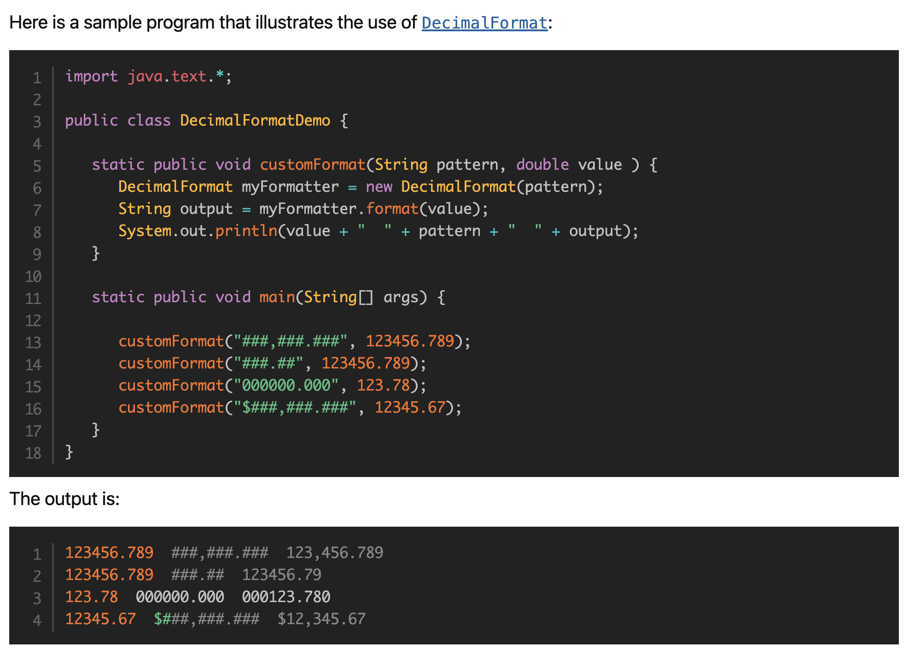
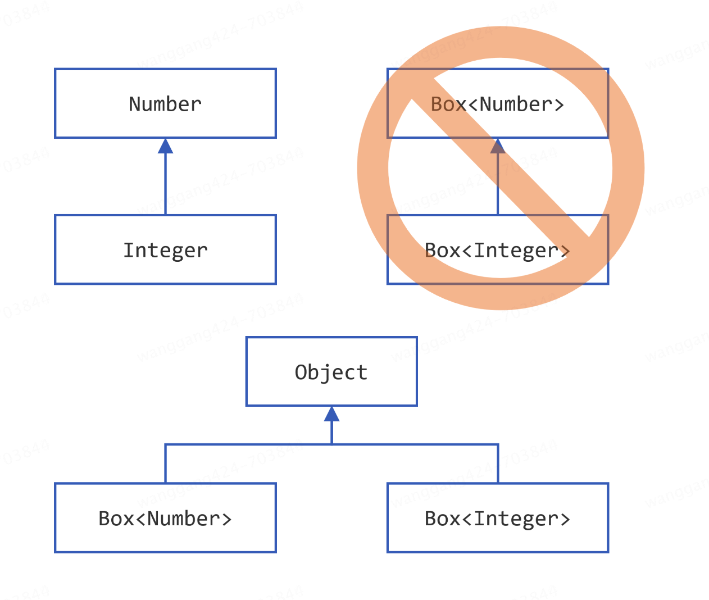

第二次阅读 Java 官方教程，有些不一样的理解。内容比较散乱，个人意识流笔记。
学习开始时间：2023 年 12 月 1 日
学习结束时间：2024 年 4 月 3 日
Running Your First Java Application
Java works in a way that differs from C or C++.
这里是想说 Java 有 JVM 吧
compiler：Some languages do not have a compiler; Java does. Every compiler is specific to a language.
知道 Java 代码需要编译成.class文件就行了。.class文件是可执行的。
编译和执行，需要软件支持，这个软件叫做，JDK。
从 Java11 开始，单个文件，可以直接执行
.java文件，JDK 内部自己编译
A Java class must be saved in a file that has the same name as your class with the extension .java. This is mandatory and is in fact very convenient because you do not need to open a file to know what class is written in it.
As of now, downloading “Java” means downloading the Java Development Kit, also known as the JDK. The JDK contains many tools and among them are the ones you will be using to compile and run a Java application. It is officially distributed by the OpenJDK project and by Oracle.
JDK 有 2 个主流版本，OpenJDK 和 OracleJDK
The JRE stands for Java Runtime Environment. It is a subset of the JDK that is not distributed by the OpenJDK or Oracle anymore. It only contained the tools needed to run a Java application. You cannot compile your code with the tools provided in the JRE.
不用手动安装 JRE！JRE 是 JDK 子集，不能编译，只能运行 Java 程序。JRE 包括 Java 虚拟机（JVM）、类库等。从 Java 11 版本开始，OpenJDK 和 Oracle 只提供 JDK 的发行版，不再单独分发 JRE。如果你需要 JRE 来运行 Java 程序，你需要先安装 JDK，然后从 JDK 中提取 JRE。现在只需要安装 JDK 就可以。
环境变量，JAVA_HOME、PATH（bin），这样就能使用 java、javac 等命令了。
javac 文件名.java
java 类名（不能加上.class，否则报错：Could not find or load main class HelloWorldApp.class）
编译文件，运行类。
CLASSPATH，找不到类时要设置。the directories and archives that are searched to locate class files.
Staying Aware of New Features
Java 8, released in 2014, brought Lambda expressions to the Java platform as well as the Stream API, Optional class, and a host of other great features. This is one of the reasons why Java 8 became the most popular version in Java’s history. Even today, it remains one of the most widely used versions of Java.
毕业那年 Java8 才出来
Java8 到 Java9 花了 3 年，从 Java9 开始每 6 个月 1 个版本，到 2023 年都出到 JDK21 了。
Getting to Know the Language
In the Java programming language, each class is allowed to have one direct superclass, and each superclass has the potential for an unlimited number of subclasses.
In its most common form, an interface is a group of related methods with empty bodies.
接口没有方法体
类必须实现接口中所有方法，缺一不可。
The Java Platform API Specification contains the complete listing for all packages, interfaces, classes, fields, and methods supplied by the Java SE platform.
类变量在 Java 中通过 static 来定义，static 还是挺形象，静态不变的，相反那些动态的是实例变量，不同实例不一样。
The Java programming language is statically-typed, which means that all variables must first be declared before they can be used.
The compiler will assign a reasonable default value for fields; for local variables, a default value is never assigned.最好不要依赖变量默认值，而是编码时显示指出默认值，不管是 field 还是 variable。
从 JDK10 开始可以使用 var 关键字来定义变量，省略指定类型，编译器能自动识别：

There are restrictions on the use of the var type identifier.
-
You can only use it for local variables declared in methods, constructors and initializer blocks.
-
varcannot be used for fields, not for method or constructor parameters. -
The compiler must be able to choose a type when the variable is declared. Since
nullhas no type, the variable must have an initializer.
也就是说，var 只能用在局部变量，并且必须初始化。

When using the instanceof operator, keep in mind that null is not an instance of anything.
We recommend using the enhanced for statement instead of the general form whenever possible.
按照标签 break：
class BreakWithLabelDemo {
public static void main(String[] args) {
int[][] arrayOfInts = {
{32, 87, 3, 589},
{12, 1076, 2000, 8},
{622, 127, 77, 955}
};
int searchfor = 12;
int i;
int j = 0;
boolean foundIt = false;
search:
for (i = 0; i < arrayOfInts.length; i++) {
for (j = 0; j < arrayOfInts[i].length;
j++) {
if (arrayOfInts[i][j] == searchfor) {
foundIt = true;
break search;
}
}
}
if (foundIt) {
System.out.println("Found " + searchfor + " at " + i + ", " + j);
} else {
System.out.println(searchfor + " not in the array");
}
}
}
break search会中断 for 循环，执行 search 标签后面的语句，也就是后面的if (foundIt)语句。
也可以按标签 continue：
class ContinueWithLabelDemo {
public static void main(String[] args) {
String searchMe = "Look for a substring in me";
String substring = "sub";
boolean foundIt = false;
int max = searchMe.length() -
substring.length();
test:
for (int i = 0; i <= max; i++) {
int n = substring.length();
int j = i;
int k = 0;
while (n-- != 0) {
if (searchMe.charAt(j++) != substring.charAt(k++)) {
continue test;
}
}
foundIt = true;
break test;
}
System.out.println(foundIt ? "Found it" : "Didn't find it");
}
}
continue test会跳过 for 循环，而不是 while 循环。
按标签 break/continue 可以在多层嵌套中使用，以中断/跳过外部循环，不然就得加 flag 变量，在外层循环加 if 语句。
switch 语句中的 yield：
class Test {
enum Day {
MONDAY, TUESDAY, WEDNESDAY, THURSDAY, FRIDAY, SATURDAY, SUNDAY
}
public String calculate(Day d) {
return switch (d) {
case SATURDAY, SUNDAY -> "week-end";
default -> {
int remainingWorkDays = 5 - d.ordinal();
yield remainingWorkDays;
}
};
}
}
switch 语句的类型有限制：
You must choose the type of your selector variable among the following types:
-
byte,short,char, andintprimitive data types -
Character,Byte,Short, andIntegerwrapper types -
enumerated types
-
the
Stringtype.
It is worth noting that the following primitive types cannot be used for the type of your selector variable: boolean, long, float, and double.
注意这里的 noting 是 note，不是 nothing
The selector variable of a switch statement can be an object, so this object can be null. You should protect your code from null selector variables, because in this case the switch statement will throw a NullPointerException.
public String convertToLabel(int quarter) {
String quarterLabel =
switch (quarter) {
case 0 -> {
System.out.println("Q1 - Winter");
yield "Q1 - Winter";
};
default -> "Unknown quarter";
};
}
return quarterLabel;
}
switch 里面的 yield 本质上是 return，只是为了防止混淆，表示只退出 switch 表达式（Java14 新语法），而不是退出整个方法，所以发明了 yield。
for 循环：
for(int i = 0; i < 5; i++) {
System.out.println(i);
}
改造为 functional style：
import java.util.stream.IntStream;
...
IntStream.range(0, 5)
.forEach(System.out::println);
IntStream.rangeClosed(0, 5)等价于for(int i = 0; i <= 5; i++)
IntStream.iterate(0, i -> i < 15, i -> i + 3)等价于for(int i = 0; i < 15; i = i + 3)
for(int i = 0;; i = i + 3) {
if(i > 20) {
break;
}
System.out.println(i);
}
IntStream.iterate(0, i -> i + 3)
.takeWhile(i -> i <= 20)
.forEach(System.out::println);
List<String> names = List.of("Jack", "Paula", "Kate", "Peter");
for(String name: names) {
System.out.println(name);
}
List<String> names = List.of("Jack", "Paula", "Kate", "Peter");
names.forEach(name -> System.out.println(name));
The forEach() method is available both on a Collection<T> and on a Stream<T>. Functions like filter(), which we’ll use soon, are available only on a Stream<T> and not on the Collection. This is by design in order to provide efficiency when multiple intermediate operations may precede the terminal operation like forEach(), findFirst(), etc.
List<String> names = List.of("Jack", "Paula", "Kate", "Peter");
for(String name: names) {
if(name.length() == 4) {
System.out.println(name);
}
}
List<String> names = List.of("Jack", "Paula", "Kate", "Peter");
names.stream()
.filter(name -> name.length() == 4)
.forEach(name -> System.out.println(name));
The compiler does not consider return type when differentiating methods, so you cannot declare two methods with the same signature even if they have a different return type.
方法重载不能根据返回类型来做，必须参数个数或者参数类型不一样。
在 Java 中，默认的访问修饰符是包范围（package-private），也被称为默认访问修饰符。这意味着，如果没有指定访问修饰符，类、接口、方法和变量将只能在同一包中被访问。
包范围不包括子目录。默认情况下，只有在同一包中的类才能访问包范围的成员。子目录中的类不被认为是同一包的一部分，因此无法访问包范围的成员。
Parameters 形参、Arguments 实参，注意不同叫法。
Simply declaring a reference variable does not create an object. For that, you need to use the new operator, as described in the next section. You must assign an object to originOne before you use it in your code. Otherwise, you will get a compiler error.
Note: You also can use interface names as return types. In this case, the object returned must implement the specified interface.
构造函数的位置：If present, the invocation of another constructor must be the first line in the constructor.
protected = package-private + subclass
Note: You can also refer to static fields with an object reference like
myBike.numberOfBicyclesbut this is discouraged because it does not make it clear that they are class variables.Note: You can also refer to static methods with an object reference like
instanceName.methodName(args)but this is discouraged because it does not make it clear that they are class methods.
A common use for static methods is to access static fields. 为什么要用静态方法（类方法）？为了访问静态变量（类变量）。
Note: If a primitive type or a string is defined as a constant and the value is known at compile time, the compiler replaces the constant name everywhere in the code with its value. This is called a compile-time constant. If the value of the constant in the outside world changes (for example, if it is legislated that pi actually should be 3.975), you will need to recompile any classes that use this constant to get the current value.
通过static final定义的基本类型和 String 的常量会在编译时就在代码中替换。
A class can have any number of static initialization blocks, and they can appear anywhere in the class body. The runtime system guarantees that static initialization blocks are called in the order that they appear in the source code.
嵌套类的实例化：this.new EvenIterator();
-
Nested Classes（Inner Classes）是定义在类中
-
Local Classes 是定义在方法中（ you can define a local class in a method body, a for loop, or an if clause）
-
Anonymous Classes 是没有类名的 Local Classes（Use them if you need to use a local class only once）
由此可见，Java 的类也不是必须单独定义在文件中，也是可以在一个文件中定义多个类的。但是嵌套类是有限制的。
You cannot declare an interface inside a block; interfaces are inherently static.
注意 Expressions, Statements, and Blocks 的区别
接口是可以定义在类中的，但是不能定义在方法中。
Enums are classes where all instances are known to the compiler.
Often, the wrapping is done by the compiler—if you use a primitive where an object is expected, the compiler boxes the primitive in its wrapper class for you. Similarly, if you use a number object when a primitive is expected, the compiler unboxes the object for you.

Constructors are not members, so they are not inherited by subclasses, but the constructor of the superclass can be invoked from the subclass.
Methods in an interface (see the Interfaces section) that are not declared as default or static are implicitly abstract, so the abstract modifier is not used with interface methods. (It can be used, but it is unnecessary.)
接口默认是 abstract。接口里面的字段只能是静态常量（public static final）。
Which should you use, abstract classes or interfaces?
-
Consider using abstract classes if any of these statements apply to your situation:
- You want to share code among several closely related classes.
- You expect that classes that extend your abstract class have many common methods or fields, or require access modifiers other than public (such as
protectedandprivate). - You want to declare non-static or non-final fields. This enables you to define methods that can access and modify the state of the object to which they belong.
-
Consider using interfaces if any of these statements apply to your situation:
- You expect that unrelated classes would implement your interface. For example, the interfaces
ComparableandCloneableare implemented by many unrelated classes. - You want to specify the behavior of a particular data type, but not concerned about who implements its behavior.
- You want to take advantage of multiple inheritance of type.
- You expect that unrelated classes would implement your interface. For example, the interfaces
抽象类实现接口部分方法，子类实现剩余方法：
abstract class X implements Y {
// implements all but one method of Y
}
class XX extends X {
// implements the remaining method in Y
}
If you define a reference variable whose type is an interface, any object you assign to it must be an instance of a class that implements the interface.
Box<Integer> is not a subtype of Box<Number> even though Integer is a subtype of Number.

List<A> is a subtype of List<?>
It’s important to note that List<Object> and List<?> are not the same. You can insert an Object, or any subtype of Object, into a List<Object>. But you can only insert null into a List<?>.

不能直接创建泛型的实例：
public static <E> void append(List<E> list) {
E elem = new E(); // compile-time error
list.add(elem);
}
可以通过反射来创建：
public static <E> void append(List<E> list, Class<E> cls) throws Exception {
E elem = cls.newInstance(); // OK
list.add(elem);
}
List<String> ls = new ArrayList<>();
append(ls, String.class);
Lambda Expression 必须是 functional，a functional interface is an interface that has only one abstract method
Lambda Expression 只能使用值，也就是不可变。
Variable used in lambda expression should be final or effectively final
The JDK 8 also introduces a new package: java.util.function with functional interfaces for you to use in your application.
List<String> immutableStrings =
List.of("one", "two", "three", "four", "five");
List<String> strings = new ArrayList<>(immutableStrings);
Predicate<String> isOddLength = s -> s.length() % 2 == 0;
strings.removeIf(isOddLength);
System.out.println("strings = " + strings);
从这个例子看出，Lambda 表达式的返回值是“函数接口实现”，Supplier<T> Consumer<T> Predicate<T> Function<T, R>，然后再传入 Stream/Collection。
The java.util.function package is now central in Java, because all the lambda expressions you are going to use in the Collections Framework or the Stream API implement one of the interfaces from that package.
The Four Categories of Functional Interfaces:
-
the suppliers: do not take any argument, return something
-
the consumers: take an argument, do not return anything
-
the predicates: take an argument, return a boolean
-
the functions: take an argument, return something
Lambda 表达式可以简写，叫做方法引用，可以理解为“匿名函数”，比如：
// Static Method References
// RefType::staticMethod
IntBinaryOperator max = (a, b) -> Integer.max(a, b);
IntBinaryOperator max = Integer::max;
// Unbound Method References
// RefType:instanceMethod
Function<String, Integer> toLength = s -> s.length();
Function<String, Integer> toLength = String::length;
// Bound Method References
// expr:instanceMethod
Consumer<String> printer = s -> System.out.println(s);
Consumer<String> printer = System.out::println;
// Constructor Method References
// ClassName::new
Supplier<List<String>> newListOfStrings = () -> new ArrayList<>();
Supplier<List<String>> newListOfStrings = ArrayList::new;
Comparator<String> byLengthThenAlphabetically =
Comparator.comparing(String::length)
.thenComparing(naturalOrder());
List<String> strings = Arrays.asList("one", "two", "three", "four", "five");
strings.sort(byLengthThenAlphabetically);
System.out.println(strings);
List<String> strings =
Arrays.asList("one", "two", "three", "four", "five");
strings.sort(byLengthThenAlphabetically.reversed());
System.out.println(strings);
List<String> strings =
Arrays.asList("one", null, "two", "three", null, null, "four", "five");
Comparator<String> naturalNullsLast =
Comparator.nullsLast(naturalOrder());
strings.sort(naturalNullsLast);
System.out.println(strings);
Annotations have a number of uses, among them:
- Information for the compiler — Annotations can be used by the compiler to detect errors or suppress warnings.
- Compile-time and deployment-time processing — Software tools can process annotation information to generate code, XML files, and so forth.
- Runtime processing — Some annotations are available to be examined at runtime.
使用@interface自定义注解。
Definition: A package is a grouping of related types providing access protection and name space management. Note that types refers to classes, interfaces, enumerations, and annotation types. Enumerations and annotation types are special kinds of classes and interfaces, respectively, so types are often referred to in this section simply as classes and interfaces.
For convenience, the Java compiler automatically imports two entire packages for each source file:
- the
java.langpackage and - the current package (the package for the current file).
Java 无需手动导入当前包的其他类，因为 Java 默认已经导入了。
You might have to set your CLASSPATH so that the compiler and the JVM can find the .class files for your types.
Checked exceptions are subject to the Catch or Specify Requirement. All exceptions are checked exceptions, except for those indicated by Error, RuntimeException, and their subclasses.
checked exceptions 是指需要校验的异常，要返给用户提示。
The runtime system always executes the statements within the finally block regardless of what happens within the try block. 即使有异常，也会执行 finally
Important: The finally block is a key tool for preventing resource leaks. When closing a file or otherwise recovering resources, place the code in a finally block to ensure that resource is always recovered.（还可以用 try-with 语句）
static String readFirstLineFromFile(String path) throws IOException {
try (BufferedReader br =
new BufferedReader(new FileReader(path))) {
return br.readLine();
}
}
you can throw only objects that inherit from the java.lang.Throwable class.
只有 checked exception 才需要在方法小括号后面加上 throws
Mastering the API
There are two main categories of interfaces in the Collections Framework: collections and maps.
List 有序，Set 不可重复。
What is the difference between sorting and ordering? A List keeps its elements in the order they have been added, and a SortedSet keeps them sorted.
addAll()，This is an important point to understand: getting a true value does not mean that all the elements of the other collection have been added; it means that at least one has been added.
ArrayList and LinkedList
Is one of these implementation better than the other? If you are not sure which one to choose, then your best choice is probably
ArrayList.What was true for linked lists when computing was invented in the 60’s does not hold anymore, and the capacity of linked lists to outperform arrays on insertion and deletion operations is greatly diminished by modern hardware, CPU caches, and pointer chasing. Iterating over the elements of an
ArrayListis much faster that over the elements of aLinkedList, mainly due to pointer chasing and CPU cache misses.There are still cases where a linked list is faster than an array. A doubly-linked list can access its first and last element faster than an
ArrayListcan. This is the main use case that makesLinkedListbetter thanArrayList. So if your application needs a Last In, First Out (LIFO, covered later in this tutorial) stack, or a First In, First Out (FIFO, also covered later) waiting queue, then choosing a linked list is probably your best choice.On the other hand, if you plan to iterate through the elements of your list, or to access them randomly by their index, then the
ArrayListis probably your best bet.
headSet(toElement)andtailSet(fromElement)returns you subsets containing the elements lower thantoElementor greater thanfromElementsubSet(fromElement, toElement)gives you a subset of the element betweenfromElementandtoElement.
The three subsets that these methods return are views on the main set. No copy is made, meaning that any change you make to these subsets will be reflected in the set, and the other way round.
The Collections Framework has a class called Arrays with about 200 methods to handle arrays.
The Collections Framework comes with another factory class: Collections, with a set of method to manipulate collections and their content. There are about 70 methods in this class.
The Collections Framework gives you two interfaces to model queues and stacks:
- the
Queueinterface models a queue; - the
Dequeinterface models a double ended queue (thus the name). You can push, pop, poll and peek elements on both the tail and the head of aDeque, making it both a queue and a stack.
Although Vector is not deprecated, its usage is discouraged. So is the usage of the Stack class. If you do not need the thread safety, then you can safely replace its usage with Deque and ArrayDeque. If what you need is a thread-safe stack, then you should explore the implementations of the BlockingQueue interface.
HashSet 其实是个 HashMap。a hashset stores your object in a hashmap. Your objects are the keys of this hashmap, and the value is just a placeholder, an object with no significance.
The important point to remember here is that if you mutate your objects after you have added them to a set, you may come across weird bugs in your application, that will be hard to fix. You should never mutate an object once it has been added to a Set!
In a nutshell, the Stream API is about providing an implementation of the well known map-filter-reduce algorithm to the JDK.
The first step of the map-filter-reduce algorithm is the mapping step. A mapping consists of the transforming the objects or the values that you are processing. A mapping is a one-to-one transformation: if you map a list of 10 objects, you will get a list of 10 transformed objects.
A mapping changes the types of objects; it does not change their number.
A mapping is modeled by the Function functional interface.
A filtering changes the number of objects; it does not change their type.
A filtering is modeled by the Predicate functional interface.
The reduction step allows you to build complex structures with your data, including lists, sets, maps of any kind, or even structures that you can build yourself.
For obvious performances reasons, creating a map() method that would return a Collection on the Collection interface is not the right way to go. You would end up creating unnecessary intermediate structures with a high overhead on both the memory and the CPU.
This is the reason why the map() and filter() methods have not been added to the Collection interface. Instead, they have been created on the Stream interface.
The Stream interface avoids creating intermediate structures to store mapped or filtered objects.
流的 map 是一对一映射，也就是转变类型，不改类型就不用 map。如果要输出为 Map 类型 ，要使用 collect。
The first, legacy one, is the File class. This class is mentioned here, with a word of warning: you should not use it anymore in your code, unless you have very good reasons to do so. You should favor the use of the Path interface, also covered in this section. Along with the factory methods from the Files, it gives you more features than the File class, and better performances, especially to access larger files and directories.
java.security 包内置了安全实现，比如生成密钥、数字签名等。
Java reflection allows an object to look in the mirror and discover what fields, methods, and constructors it has. We can read and write fields, invoke methods, and even create new objects by calling the constructors.
Organizing your Application
The Java APIs are organized into methods, classes, packages, and - at the highest level - modules. A module has a number of essential pieces of information attached to it:
- a name
- a list of dependencies on other modules
- a public API (with everything else being module internal and inaccessible)
- a list of services it uses and provides
Getting to know the JVM
Manual memory management does have some advantages. Developers have precise control over when an object is removed. Manual memory management might also be more efficient as no background process is running, consuming system resources and monitoring memory usage. Though this advantage is less significant as modern automated memory systems have improved in performance.
However, manual memory management comes with some significant downsides. With manual memory management, developers must consciously know how an application uses memory. This can be time-consuming and difficult, requiring developers to add control code for the safe allocation and deallocation of objects from memory. This control code could be distracting as it obscures the business meaningful work the code is attempting to accomplish. A developer might also fail to properly handle error conditions, resulting in objects not being deleted, leading to a memory leak.
Most garbage collectors in Java are generational garbage collectors. Generational garbage collectors are designed to take advantage of the weak generational hypothesis, which posits that most objects are short-lived. Consequently, generational garbage collectors divide the heap into young and old generations. On allocation, objects start in a young generation, objects in young generations are frequently checked if they are no longer reachable. If an object survives enough garbage collection cycles, it’ll be copied to an old generation, which is less frequently checked.
参考资料：